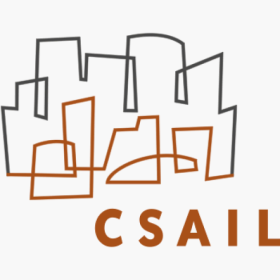

About Me
I got my PhD in Computer Science from University of Michigan (UMich), advised by Prof. Mosharaf Chowdhury.
As an optimist and strong advocate of AGI, my research tries to build efficient systems that enable researchers to push the boundary of machine learning, including LLM serving and training. Currently, I'm exploring AI agent for Scientific Research.
To contribute to the research community, I maintain comprehensive paper collections on Private Machine Learning Systems and LLM Systems.
I'm always eager to engage in meaningful discussions about research and explore potential academic collaborations. Feel free to reach out via email or schedule a meeting to connect!
My academic journey has been enriched by wonderful collaborations with Prof. Sam Madden and Prof. Lei Cao at MIT, as well as Prof. Siqian Shen at Umich.
Publications
Side Projects
Curie
[Year of 2024] Curie is the first AI-agent framework designed for automated and rigorous scientific experimentation.
ML.Energy Leaderboard
[Year of 2023] The goal of the ML.ENERGY Leaderboard is to give people a sense of how much energy LLMs would consume.
FedScale
[Year of 2022] FedScale is a scalable and extensible open-source federated learning (FL) engine and benchmark.
Awards
- Machine Learning and Systems Rising Stars 🌟 (Program of 2023)
- Shanghai (China) Outstanding Graduate (Top 5%) 2020
Experience
| Company/Institution | Position | |
|---|---|---|
| Meta Menlo Park, CA |
Part-time Research Scientist, Llama Training Systems. May 2024 - Dec 2024 |
|
| University of Michigan Ann Arbor, MI |
Teaching Assistant, Systems for Generative AI (EECS 598) Jan 2024 - May 2024 |
|
| Apple New York, NY |
PhD Intern, Private Machine Learning Framework. May 2022 - Aug 2022 |
|
|  | MIT CSAIL Database group Cambridge, MA |
Research Intern, High-dimensional vector database.
May 2019 - Jan 2020 |
| University of Michigan Ann Arbor, MI |
Teaching Assistant, Database Management (EECS484) Sep 2019 - Aug 2020 |
Community Service
| Organization | Position | |
|---|---|---|
| Umich CSE Graduate Students Organization Ann Arbor, MI |
DEI Chair May 2023 - May 2024 |
|
| SJTU-Joint Institute Student Union SH, China |
Vice President June 2017 - June 2018 |
Education
| Year | School | Degree | 2020-2025 | University of Michigan | Master & Ph.D in Computer Science |
|---|---|---|
| 2018-2020 | University of Michigan | B.S.E in Data Science | 2016-2020
|
Shanghai Jiaotong University | B.E in Electrical and Computer Engineering |